ADMINISTRACJA SYSTEMAMI OPERACYJNYMI / Dynamiczna konfiguracja hostów (DHCP)
DHCP - Dynamic Host Configuration Protocol
Instalacja i konfiguracja DHCP ma niewielkie różnice w zależności czy serwer jest kontrolerem domeny (AD) czy nie, dlatego wykonamy konfigurację w dwóch wersjach.Dodaj rolę "Serwer DHCP". 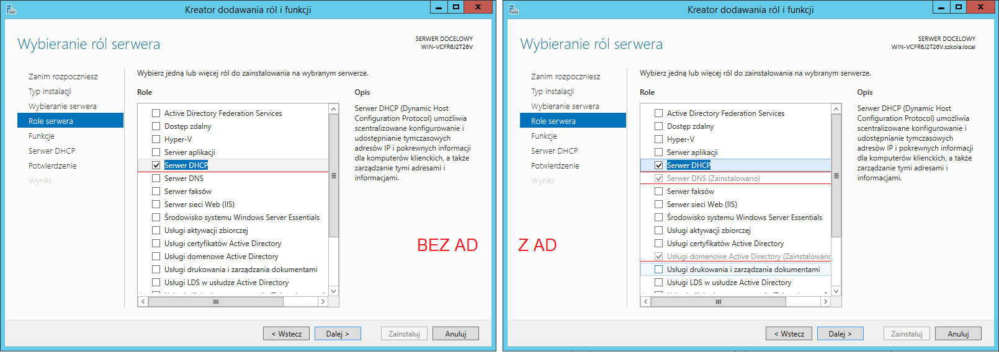 Będąc na serwerze który nie jest kontrolerem domeny wyskoczy takie okienko. Można je zignorować klikając "Kontynuuj". 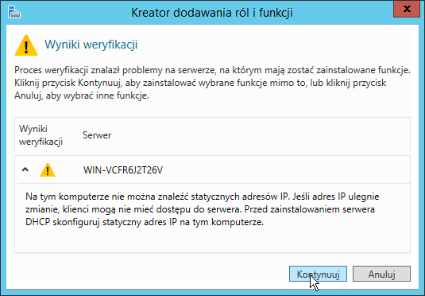 Jak mamy skonfigurowane karty sieciowe to możemy to ostrzeżenie zignorować klikając kontynuuj. No i znowu dalej, dalej… zainstaluj
Jak się zainstaluje klikamy na niebiesko “Dokończ konfigurację funkcji DHCP”
Jak zamkniemy to będzie w powiadomieniach
 “Dokończ konfigurację
funkcji DHCP”
“Dokończ konfigurację
funkcji DHCP” Tam klikamy potwierdź zatwierdź.
W Menedżerze serwera prawy górny róg klikamy narzędzia>DHCP
W razie gdyby wystąpił poniższy błąd, że server DHCP się nie uruchomił należy to zrobić ręcznie tak jak na poniższym obrazku: 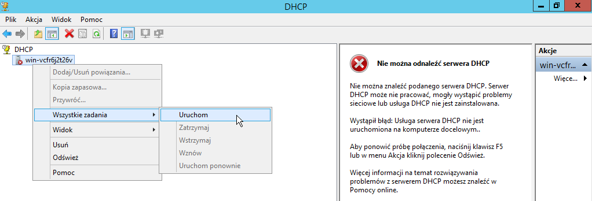 Jak będzie czerwona ikona to klikamy tak jak wyżej w uruchom teraz mamy coś takiego dalej DHCP nie działa. 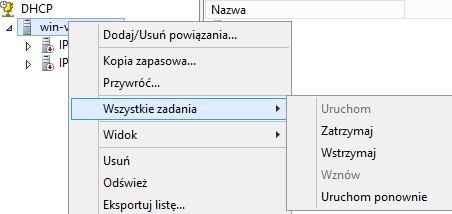 To tak jak wyżej klikamy uruchom ponownie jak się już uruchomi, wystarczy odświeżyć IPv4. 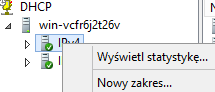 Jest zielony znaczek to prawym przyciskiem myszy na IPv4 >nowy zakres…
Prze kalikujemy do okna “Zakres adresów IP” Ja podałem takie dane wiec mój win10 dostanie adres 192.168.0.50
Jak na egzaminie będą chcieli DHCP w zakresach
192.168.0.50 - 192.168.0.56
192.168.0.67 - 192.168.0.95
to nasz zakres będzie początkowy 192.168.0.50 końcowy 192.168.0.95
a na kolejnej karcie wykluczamy początkowy 192.168.0.56 końcowy 192.168.0.67
Kolejna karta określa czas dzierżawy mogą chcieć na egzaminie inny niż domyślny 8 Dni
Na karcie Nazwa domeny i serwery DNS dodajemy adres ip naszego serwera dodaj i dalej (Przy komunikacie ostrzegawczym kontynuujemy mimo to) Serwery WINS też dodajemy adres IP serwera 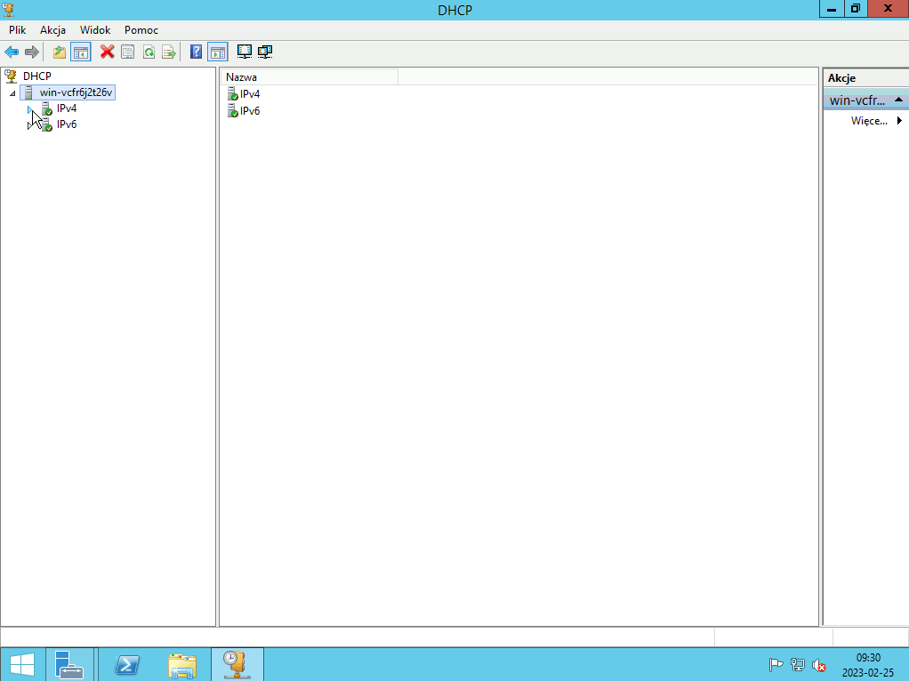 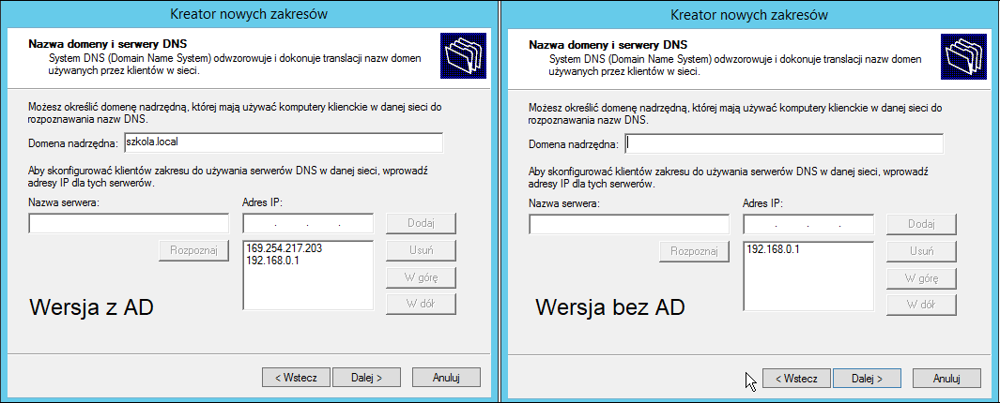 Pamiętaj że klienci muszą mieć ustawione uzyskiwanie adresów IP i DNS na automatyczne. 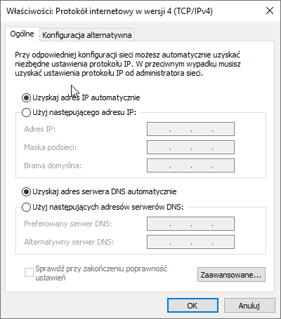 Teraz na kliencie odpalamy wiersz poleceń CMD (koniecznie jako administrator, konto lokalne Max jest adminem).
ipconfig /release -- zwalnia / oddaje swój adres ip do puli serwera DHCP
ipconfig /renew -- pobiera nowy adres ip z puli serwera DHCP
(jak zapomnisz tych komend to przy ponownym uruchomieniu klienta adres się zaktualizuje) 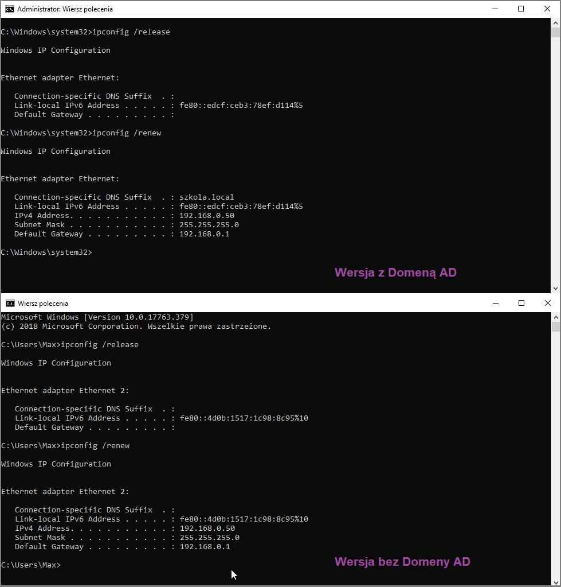 Ustawmy stały adres spoza zakresu:
Potrzebujemy adresu fizycznego karty sieciowej klienta uzyskamy ją za pomocą ipconfig /all
Tak ta linia wygląda u mnie Klikamy prawym na Zastrzeżenia > Nowe zastrzeżenie 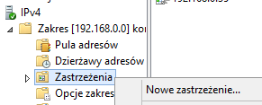 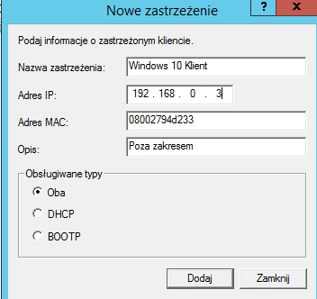 Zauważ że fizyczny adres możesz wpisać bez - myślników i małymi literami Po odnowieniu dzierżawy uzyskałem adres ip 192.168.0.3 i jest on na stałe przypisany do mojej karty sieciowej 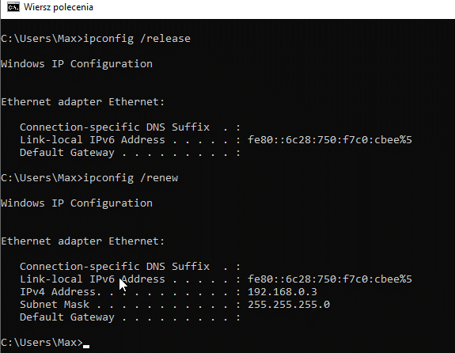